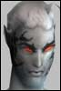

| Author | Thread |
Comfortyou
Leetas
 Registered: May 2002
Posts: 50 | quote:
Originally posted by Cz
What if we keep - or even increase - the melee and physical init penalty? I don't know whether the scopes are actually intended to work with close combat attacks, so that might actually be an option, I would guess.
very good idea |
Tjohei
Just real old
 Registered: Nov 2001
Posts: 85 | CZ What is the problem with LLTS and why must it be removed. Would be nice to know that.
Aimabel - Soldier RK2
/delete all LLTS
/delete all Soldiers |
cold
Supa Leet
 Registered: Nov 2001
Posts: 905 | quote:
Originally posted by Wiped
I have to say, this is the way to go. With the crit buff nerf, there should be an option for non melee characters to have a nice crit advantage.
Dont change the Old scopes, and make them start dropping again. And make them missionable, not boss loot. When something is available to ALL, there is no reason to nerf. Just make sure its ranged only. MA's already have nice crits buffs, self-only. They dont need any more help.
I don't think this is a good solution. We'd see shotgun MA's and enforcers all over again. |
sombreher0
Leetas
 Registered: Sep 2002
Posts: 56 | since omni have NO KAEHLER SLEEVE the scope should add some assualt rifle and full auto like + 70 each . |
| Cz Registered: Nov 2001
Posts: 1184 |  Sorry SorryI really don't have a longer explanation, and I honestly don't have time to get it right now. 
I'll get to is when I can. In the meantime, please stick to suggestions in this thread. |
Niraxtc
Leetas
 Registered: Jul 2002
Posts: 41 | its funny to read some suggestions like
"give money for every ql level, or give tradeskills, or xp bonus"
the scope was a pure pvp tool and a very rare and worth achieving one. i dont think ppl using it really care of tradeskills, % exp bonus or money lol. there are other things that accomplish all these things much better.
keep it a fighting-item. keep it rare and at least worth having. |
Loveyou
Leetas
Registered: Jun 2002
Posts: 63 | quote:
Originally posted by nirax
its funny to read some suggestions like
"give money for every ql level, or give tradeskills, or xp bonus"
the scope was a pure pvp tool and a very rare and worth achieving one. i dont think ppl using it really care of tradeskills, % exp bonus or money lol. there are other things that accomplish all these things much better.
keep it a fighting-item. keep it rare and at least worth having.
Its not a pure PvP tool period |
Zepher
Supa Leet
 Registered: Dec 2001
Posts: 145 | Yeah Cz,
The crit bonus comes with majorly high init penalties ... you get some you lose some ... I don't think it's deserving a nerf, since a ql 200 old scope gets you +15% crit and -800 inits ... not much classes can get over the initdebuff really, unless they're 160+ and have ql200 shining bright and faded init clusters implanted + they have maxxed their init and have a green initskill next to it ... that's the only way you can overcome those severe debuffs... and ... the new scope ql400 is the same as the old scope ql200 only thing that differs is the qls, the requirements, and the Aimed shot bonus ...
the new scope = the old scope, just the requirements changed and made it ql400 (rediculous) just so no-one can get a better one then the old 8% scope ...
That was the first scope nerf, .... and nonw you're gonna nerf these old things, whilst in the old patch notes you guys posted "The old scopes will be a thing to charish" ??? what's up with that promise?
Here, 14.2 patch notes, Item changes =>
"New version of low light targeting scope has been made. The new one has no night-vision effect, and a lower critical increase buff. The old one will no longer drop, but will stay in the game. Treasure the ones already there..."
I can read "Treasure the ones already there" wtf is up with that promise guys, we did treasure the ones already there, I paid my ass off for one, and now you're doing this?
FC you break promise upon promise ... I guess it won't take long until you guys destroy your own game? |
Zepher
Supa Leet
Registered: Dec 2001
Posts: 145 | quote:
Originally posted by C0BBY
since omni have NO KAEHLER SLEEVE the scope should add some assualt rifle and full auto like + 70 each .
Bump! |
Vdpmeat
Supa LeetRegistered: Nov 2001
Posts: 80 | Make it only usable by professions that don't have self-only crit buffs... or make the crit bonus in-effective for those profs and replace it with some other bonus.
Kind of hard to make suggestions when the details of the perceived problem arent known. |
Compulsion
LeetRegistered: Jun 2002
Posts: 5 | how about bringing the crit chance in line with the ve but also changing the hud location so the llts stacks with the ve, would be one in the eye for the nerf screamers  |
Phione
Supa Leet
 Registered: May 2002
Posts: 370 | Cz, as I stated in my other posts, Melee users already lack a damage advantage that we're suppose to get, and now you're suggesting to increase the melee init penalty?
We already lack fast-but-high-crit weapons, and now, making this even harder for melee users, I don't see that's fair. |
Tjohei
Just real old
Registered: Nov 2001
Posts: 85 | Cz? No time to answer? |
Zepher
Supa Leet
Registered: Dec 2001
Posts: 145 | quote:
Originally posted by VdpMeat
Make it only usable by professions that don't have self-only crit buffs... or make the crit bonus in-effective for those profs and replace it with some other bonus.
Kind of hard to make suggestions when the details of the perceived problem arent known.
Yeah and please take out the Mark of risk/danger and peril then plz ... I won't be distributing those buffs anymore to other classes ... |
Val
Eleet
Registered: Mar 2002
Posts: 33 | This is rediculous is that all FC does is read the 1 or 2 threads that all the whiners are on?? I think you seem to forget that all these whiners are all the lowly noobs just coming to the game that have payed you for 1 maybe 2 months what about all of us veterans who have been here since the beginning or the first few months at least that have been supplying you fools with paychecks for the past months why not try listening to US for once? WE DO NOT WANT THIS NERF we have been in the game for longer than these whiners and we deserve the bonuses that we have for being here this long, you are listening to the people who for the longest time didn't think your game was worth bothering with that alone is an insult to your game and then your turning around and listening to these n00bs.
If you don't want MAs to use these besause they are over powered already then double the init minuses on phys and melee leave the crit bonus alone and keep them rare, just the way they are. |
| Cz Registered: Nov 2001
Posts: 1184 | quote:
Originally posted by Phione
Cz, as I stated in my other posts, Melee users already lack a damage advantage that we're suppose to get, and now you're suggesting to increase the melee init penalty?
We already lack fast-but-high-crit weapons, and now, making this even harder for melee users, I don't see that's fair.
Ok, noted. It was just a suggestion, and I got what I wanted from it; comments on it.  |
Mekura
Leetas
 Registered: Feb 2002
Posts: 57 | Re: Nerfing Low Light Targeting Scope quote:
Originally posted by Cz
We're going to nerf the critical chance bonus on the old Low Light Targeting Scope to be equal to the [i]Targeting Scope - Vision Enhancer
What can I say? I'm shocked. It just makes me feel like you have no respect for me as a customer; for me as the person who pays your bills. I went to great lengths to get my scope a week ago. And now you're going to take that away. Well, if you have so little respect for me, perhaps I have too much for you.
Do note, I don't mean you Cz. I'm talking about whoever decided that it didn't matter when you told us the ELLTS wouldn't be touched.
It just makes me not want to support a company who can't stick to its word.
Edit, I neglected to leave any form of suggestion. In order for this tremendous bit of effort and IP I've put into this scope to be justified, you'd have to make it good enough to persuade me not to simply IPR the skills and get a VE scope. How do you do that? You make it just as good somewhere else. Reflect, damage bonus, HP bonus. But I fear the sore fact is this: you won't give it enough of a bonus to make me glad I put that much effort into getting and equipping it. I restate; it just makes me wish you had some respect for your customers. Last edited by Mekura on October 1st, 2002 at 12:02 |
| Cz Registered: Nov 2001
Posts: 1184 | Re: Cz? quote:
Originally posted by Aimabel
No time to answer?
I have time to answer. What do you mean? (Quote the statement you're commenting on, please. ) |
Zepher
Supa Leet
Registered: Dec 2001
Posts: 145 | yeah , me as MA would even like that then as the nerf even more then all this you're cooking up .. double the phys init penalties dabnaggit go ahead nerf it for me, at least others can use it then ... grrrz |
Tjohei
Just real old
Registered: Nov 2001
Posts: 85 | Cz... .. it was the question above. Why must u nerf the LLTS? |
All times are GMT.


 Last Thread Next Thread
Last Thread Next Thread 
 October 1st, 2002 11:33
October 1st, 2002 11:33